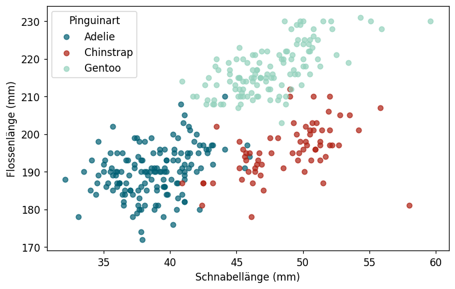
1.6 Zweidimensionale Datenanalyse
Lernziele
Am Ende dieses Unterkapitels kannst du:
- zwei Merkmale gemeinsam grafisch darstellen und erste Schlüsse ziehen.
- eine zweidimensionale Häufigkeitstabelle aufstellen und interpretieren.
- den Pearson-Korrelationskoeffizienten berechnen und interpretieren.
- eine einfache lineare Regressionsgerade bestimmen und für Vorhersagen nutzen.
- den Unterschied zwischen Korrelation und Kausalität erklären und an Beispielen zeigen.
Einführung
Bisher haben wir immer ein Merkmal auf einmal analysiert. In der Praxis interessieren uns aber oft die Beziehungen zwischen zwei Merkmalen:
- Sind größere Pinguine auch schwerer?
- Hängt das Geschlecht mit der Körpergröße zusammen?
- Welche Pinguinarten kommen auf welchen Inseln vor?
Bei der Analyse von zwei Merkmalen stellen sich drei grundlegende Fragen:
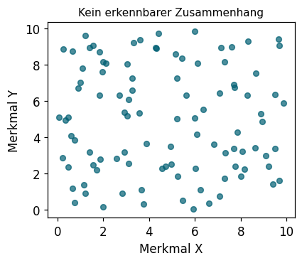
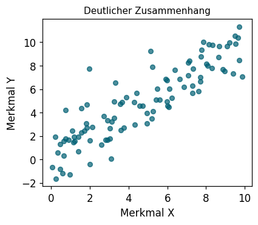
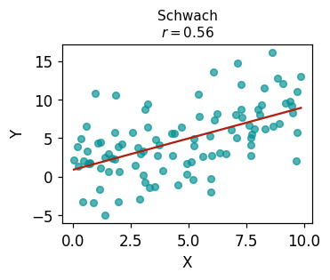
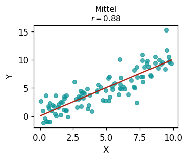
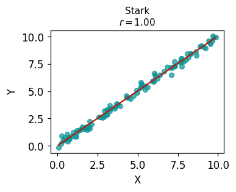
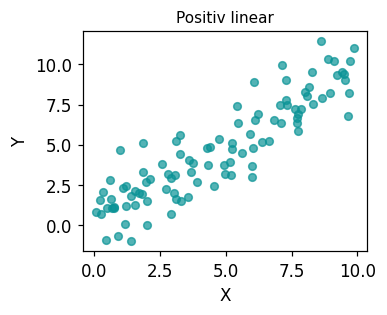
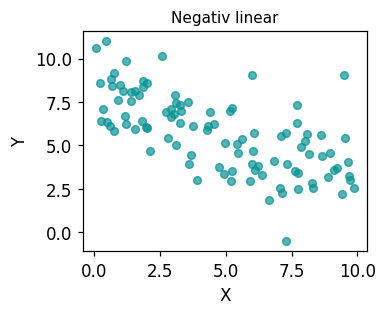
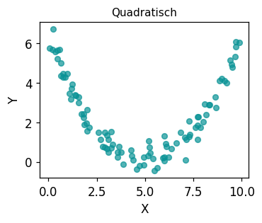
Streudiagramm
Wenn beide Merkmale kardinal skaliert sind, ist das Streudiagramm (engl. scatter plot) die wichtigste grafische Methode zur gemeinsamen Darstellung:
Das Streudiagramm zeigt: Zwischen Schnabellänge und Flossenlänge gibt es einen positiven Zusammenhang – Pinguine mit längerem Schnabel haben tendenziell auch längere Flossen. Gentoo-Pinguine (grün) sind besonders auffällig.
Aufgabe 1 (Pinguine: Eigenes Streudiagramm)
Erstelle ein Streudiagramm für Körpergewicht (body_mass_g) und Flossenlänge (flipper_length_mm). Ist ein Zusammenhang erkennbar?
TippWenn ein Merkmal nominal/ordinal ist
Hat eines der beiden Merkmale nur wenige Kategorien (nominal oder ordinal), dann ist ein gruppenweise Boxplot oder gruppierte Histogramme sinnvoller als ein Streudiagramm. Diese Darstellungen haben wir bereits in Kapitel 1.3 kennengelernt.
Zweidimensionale Häufigkeitsverteilung
Sind beide Merkmale nominal oder ordinal (mit endlich vielen Ausprägungen), fasst man ihre gemeinsame Verteilung in einer Kontingenztabelle (auch: Kreuztabelle) zusammen.
Definition 1 (Kontingenztabelle)
Seien X und Y zwei Merkmale mit Ausprägungen a_1, \dots, a_l (für X) und b_1, \dots, b_k (für Y). Die Kontingenztabelle zeigt, wie oft jede Kombination (a_{j_1}, b_{j_2}) in der Stichprobe vorkommt. Die Randsummen (Zeilen-/Spaltensummen) geben die eindimensionalen Häufigkeitsverteilungen der einzelnen Merkmale wieder.
Beispiel 1 (Pinguine: Art und Insel)
Welche Pinguinarten leben auf welchen Inseln?
island Biscoe Dream Torgersen Gesamt
species
Adelie 44 56 52 152
Chinstrap 0 68 0 68
Gentoo 124 0 0 124
Gesamt 168 124 52 344Die Tabelle zeigt: Gentoo-Pinguine leben ausschließlich auf Biscoe, Chinstrap nur auf Dream. Adelie-Pinguine sind auf allen drei Inseln vertreten. Pinguinart und Insel hängen also stark zusammen – die Merkmale sind nicht unabhängig.
Unabhängigkeit
Zwei Merkmale heißen unabhängig in der Stichprobe, wenn das Auftreten einer Ausprägung des einen Merkmals keine Information über das andere liefert. Das erkennt man daran, dass die relativen Häufigkeiten jeder Zelle dem Produkt der entsprechenden Randhäufigkeiten entsprechen:
h_{X,Y}(a_j, b_k) = h_X(a_j) \cdot h_Y(b_k) \quad \text{(für alle Kombinationen)}
Ist das nicht der Fall, besteht ein Zusammenhang.
Cramérs V – Stärke des Zusammenhangs
Um die Stärke des Zusammenhangs zweier nominaler Merkmale zu messen, nutzt man das Cramérs V (auch: Cramérs Kontingenzmaß). Es liegt immer zwischen 0 und 1:
- V = 0: kein Zusammenhang (Unabhängigkeit)
- V = 1: maximaler Zusammenhang
Aufgabe 2 (Pinguine: Cramérs V für Art und Insel)
Berechne Cramérs V für die Merkmale species und island. Wie stark ist der Zusammenhang?
Python: Kontingenztabelle und Cramérs V
import pandas as pd
from scipy.stats import chi2_contingency
import numpy as np
# Kontingenztabelle
tab = pd.crosstab(df['merkmal_x'], df['merkmal_y'])
# Cramérs V
chi2, p, dof, expected = chi2_contingency(tab)
n = tab.sum().sum()
k = min(tab.shape) - 1
cramers_v = np.sqrt(chi2 / (n * k))Kovarianz und Korrelation
Für kardinal skalierte Merkmale gibt es präzisere Zusammenhangsmaße, die sowohl Richtung als auch Stärke eines linearen Zusammenhangs quantifizieren.
Kovarianz
Als Vorstufe zum Korrelationskoeffizienten berechnen wir zunächst die Kovarianz. Sie misst, ob große x-Werte tendenziell mit großen y-Werten auftreten (positiver Zusammenhang) oder mit kleinen (negativer Zusammenhang).
Definition 2 (Empirische Kovarianz)
s_{x,y} = \dfrac{1}{n-1} \sum_{i=1}^n (x_i - \bar{x})(y_i - \bar{y})
- s_{x,y} > 0: positiver Zusammenhang
- s_{x,y} = 0: kein linearer Zusammenhang
- s_{x,y} < 0: negativer Zusammenhang
Die Kovarianz ist allerdings skalenabhängig: Messen wir Gewicht in Gramm statt Kilogramm, ändert sich ihr Wert – obwohl sich der Zusammenhang nicht geändert hat. Deshalb normieren wir sie.
Korrelationskoeffizient nach Pearson
Definition 3 (Empirischer Korrelationskoeffizient (Pearson))
r_{x,y} = \dfrac{s_{x,y}}{s_x \cdot s_y} = \dfrac{\displaystyle\sum_{i=1}^n (x_i - \bar{x})(y_i - \bar{y})}{\sqrt{\displaystyle\sum_{i=1}^n (x_i - \bar{x})^2} \cdot \sqrt{\displaystyle\sum_{i=1}^n (y_i - \bar{y})^2}}
Es gilt immer -1 \le r_{x,y} \le 1.
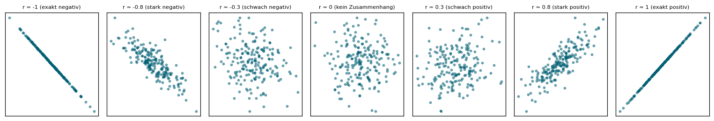
Wichtige Eigenschaften:
- r_{x,y} > 0: positiver linearer Zusammenhang
- r_{x,y} < 0: negativer linearer Zusammenhang
- |r_{x,y}| = 1: exakter linearer Zusammenhang (alle Punkte auf einer Geraden)
- r_{x,y} = 0: kein linearer Zusammenhang (kann aber andere Formen von Zusammenhang geben!)
Berechnung per Hand
Für die Körpergröße (X, in cm) und das Körpergewicht (Y, in kg) der 12-Personen-Stichprobe gilt:
\bar{x} = 174{,}63 cm, \bar{y} = 70{,}75 kg, s_x = 10{,}51 cm, s_y = 14{,}14 kg
Die Summe der Kreuzprodukte ergibt: \sum(x_i - \bar{x})(y_i - \bar{y}) = 1533{,}0
s_{x,y} = \frac{1533{,}0}{11} = 139{,}4 \qquad r_{x,y} = \frac{139{,}4}{10{,}51 \cdot 14{,}14} = 0{,}938
Starke positive Korrelation – größere Personen sind in dieser Stichprobe tendenziell schwerer.
Aufgabe 3 (Pinguine: Pearson-Korrelation)
Berechne die Pearson-Korrelation zwischen Körpergewicht (body_mass_g) und Flossenlänge (flipper_length_mm) – zuerst für alle Pinguine zusammen, dann getrennt nach Pinguinart. Überraschen dich die Ergebnisse?
Rangkorrelation nach Spearman
Der Spearman-Korrelationskoeffizient ist eine Alternative zum Pearson-Koeffizienten. Er ist robuster gegenüber Ausreißern und erkennt auch nicht-lineare, aber monotone Zusammenhänge. Dazu werden zunächst die Ränge der Beobachtungen bestimmt, und dann der Pearson-Koeffizient auf die Ränge angewandt.
TippWann welcher Koeffizient?
| Pearson | Spearman | |
|---|---|---|
| Misst | lineare Zusammenhänge | monotone Zusammenhänge |
| Ausreißer | empfindlich | robust |
| Skala | kardinal | ordinal oder kardinal |
| Python | .corr() |
.corr(method='spearman') |
Python: Korrelationskoeffizienten
# Pearson-Korrelationsmatrix (alle numerischen Spalten)
df[['spalte1', 'spalte2']].corr()
# Spearman-Korrelation
df[['spalte1', 'spalte2']].corr(method='spearman')
# Pearson mit scipy (gibt auch p-Wert zurück)
from scipy import stats
r, p_wert = stats.pearsonr(df['x'], df['y'])Einfache lineare Regression
Haben wir einen linearen Zusammenhang festgestellt, können wir die Regressionsgerade bestimmen: die Gerade \hat{g}(x) = \hat{\alpha} + \hat{\beta} \cdot x, die die Daten am besten beschreibt.
“Am besten” bedeutet: Die Summe der quadrierten vertikalen Abstände (Residuen) zwischen den Datenpunkten und der Geraden wird minimiert. Diese Methode heißt Methode der kleinsten Quadrate.
Definition 4 (Regressionsgerade (Kleinste-Quadrate))
Sei \hat{g}(x) = \hat{\alpha} + \hat{\beta} \cdot x die gesuchte Gerade. Die Koeffizienten werden so gewählt, dass \sum_{i=1}^n (y_i - \hat{g}(x_i))^2 minimal ist.
Die Kleinste-Quadrate-Schätzer lauten:
\hat{\beta} = \dfrac{s_{x,y}}{s_x^2} = \dfrac{\displaystyle\sum_{i=1}^n (x_i - \bar{x})(y_i - \bar{y})}{\displaystyle\sum_{i=1}^n (x_i - \bar{x})^2}
\hat{\alpha} = \bar{y} - \hat{\beta} \cdot \bar{x}
TippInterpretation der Parameter
- \hat{\beta} (Steigung): Wenn X um 1 Einheit steigt, verändert sich Y um \hat{\beta} Einheiten.
- \hat{\alpha} (Achsenabschnitt): Vorhergesagter Y-Wert für X = 0. Achtung: Das muss nicht immer inhaltlich sinnvoll sein (z.B. Gewicht bei Größe = 0 cm).
Beispiel 2 (Körpergröße und -gewicht bei 12 Personen)
Bekannt: \bar{x} = 174{,}63, \bar{y} = 70{,}75, s_{x,y} = 139{,}4, s_x^2 = 110{,}5
\hat{\beta} = \frac{139{,}4}{110{,}5} \approx 1{,}262 \qquad \hat{\alpha} = 70{,}75 - 1{,}262 \cdot 174{,}63 \approx -149{,}6
\hat{g}(x) = -149{,}6 + 1{,}262 \cdot x
Interpretation: Pro 1 cm mehr Körpergröße steigt das Gewicht in dieser Stichprobe um ca. 1,26 kg.
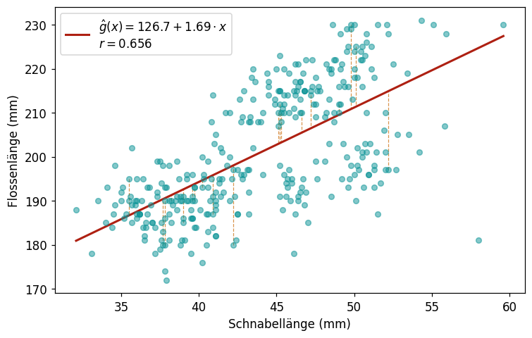
Aufgabe 4 (Pinguine: Regression)
Bestimme die Regressionsgerade für Körpergewicht (body_mass_g, x-Achse) und Flossenlänge (flipper_length_mm, y-Achse). Wie stark steigt die Flossenlänge pro 100 g mehr Gewicht? Zeichne die Regressionsgerade in ein Streudiagramm ein.
Python: Lineare Regression
from scipy import stats
slope, intercept, r, p_value, std_err = stats.linregress(x_array, y_array)
# Vorhersage für neuen Wert
x_neu = 4500 # Beispiel: Körpergewicht 4500 g
y_vorhersage = intercept + slope * x_neuAnscombe-Quartett: Immer auch plotten!
Korrelation und Regressionsgerade allein sagen noch nicht alles. Das Anscombe-Quartett (1973) zeigt vier Datensätze mit nahezu identischen statistischen Kennzahlen, die aber grundlegend verschieden aussehen:
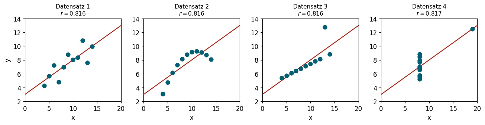
VorsichtRegel: Immer zuerst das Streudiagramm anschauen!
Die Regressionsgeraden und Korrelationskoeffizienten der vier Datensätze sind praktisch identisch. Nur das Streudiagramm zeigt: - (1) normaler linearer Zusammenhang - (2) quadratischer Zusammenhang – lineare Regression falsch gewählt! - (3) linearer Zusammenhang mit einem massiven Ausreißer - (4) rein vertikale Streuung – kein echter Zusammenhang
Kennzahlen ersetzen keine grafische Datenanalyse!
Korrelation ≠ Kausalität
Ein statistischer Zusammenhang (Korrelation) bedeutet nicht, dass ein Merkmal das andere verursacht (Kausalität). Dies ist eine der wichtigsten Erkenntnisse der Statistik.
Beispiel 3 (Babys und Störche)
In manchen europäischen Ländern wurde eine positive Korrelation zwischen der Storchenpopulation und der Geburtenrate beobachtet. Bedeutet das, dass Störche Babys bringen?
Nein – das Drittmerkmal Industrialisierung erklärt beides:
flowchart TB
A(Industrialisierung) -->|–| B(Storchenpopulation)
A -->|–| C(Geburtenrate)Die Industrialisierung reduziert sowohl die Storchenpopulation (durch Verstädterung) als auch die Geburtenrate. Die Korrelation zwischen Störchen und Geburten ist eine Scheinkorrelation.
Beispiel 4 (Relativer Alterseffekt)
In Deutschland und vielen anderen Ländern zeigen Studien: Im Dezember geborene Kinder sind im Durchschnitt schulisch und sportlich weniger erfolgreich als im Januar geborene. Werden Dezemberkinder durch ihren Geburtsmonat benachteiligt?
Nein – das Alter bei Schuleintritt ist entscheidend:
flowchart LR
A(Geburtsmonat) -->|Stichtag| C(Alter bei Schuleintritt)
C --> D(Schulerfolg / Sporterfolg)Wegen des Einschulungsstichtags sind Kinder, die kurz davor geboren wurden, bis zu fast ein Jahr älter als ihre Mitschüler. In jungen Jahren macht dieses Altersunterschied entwicklungsbedingt einen großen Unterschied – nicht der Geburtsmonat an sich.
TippDrei mögliche Erklärungen für eine Korrelation
| Szenario | Beispiel |
|---|---|
| X verursacht Y | Rauchen → Lungenkrebs (kausal) |
| Y verursacht X | Rettungssanitäter an Unfallorten ↔︎ Verletzte (Umkehrkausalität) |
| Z verursacht beides (Scheinkorrelation) | Industrialisierung → Störche und Geburtenrate |
Korrelation ist eine notwendige, aber keine hinreichende Bedingung für Kausalität. Kausalität beweist man durch kontrollierte Experimente, nicht durch Beobachtungsdaten.
Aufgabe 5 (Diskussion: Korrelation oder Kausalität?)
Denke nach: Welche Erklärung ist plausibler? Ist die Korrelation kausal, umgekehrt kausal, oder eine Scheinkorrelation?
In Städten mit mehr Feuerwehrleuten pro Einwohner gibt es mehr Brandschäden.
Kinder mit mehr Büchern zu Hause haben bessere Schulleistungen.
Länder mit mehr Fernsehgeräten pro Haushalt haben höhere Lebenserwartung.
Zusammenfassung
TippDas Wichtigste auf einen Blick
Grafische Analyse: - Streudiagramm für zwei kardinale Merkmale - Gruppierte Boxplots / Histogramme für nominal + kardinal - Kontingenztabelle für zwei nominale Merkmale
Zusammenhangsmaße:
| Maß | Merkmalstypen | Bereich | Python |
|---|---|---|---|
| Cramérs V | nominal × nominal | [0, 1] | chi2_contingency + Formel |
| Pearson r | kardinal × kardinal | [–1, 1] | .corr() |
| Spearman r^{Sp} | ordinal/kardinal | [–1, 1] | .corr(method='spearman') |
Regression: - Regressionsgerade \hat{g}(x) = \hat{\alpha} + \hat{\beta} \cdot x mit KQ-Methode - \hat{\beta} = s_{x,y} / s_x^2, \hat{\alpha} = \bar{y} - \hat{\beta}\bar{x}
Wichtigste Warnung: Korrelation ≠ Kausalität. Immer das Streudiagramm anschauen!
Wissenstest
---
primaryColor: '#0a9396'
shuffleQuestions: false
shuffleAnswers: true
---
### Welche Grafik eignet sich am besten zur gemeinsamen Darstellung zweier kardinaler Merkmale?
1. [x] Streudiagramm (scatter plot)
> Richtig! Das Streudiagramm zeigt jeden Datenpunkt als Punkt im zweidimensionalen Raum und macht Zusammenhänge direkt sichtbar.
1. [ ] Balkendiagramm
1. [ ] Kreisdiagramm
1. [ ] Boxplot
### Der Pearson-Korrelationskoeffizient $r = -0.85$ zeigt...
1. [ ] einen starken positiven linearen Zusammenhang
1. [x] einen starken negativen linearen Zusammenhang
> Richtig! Negative Werte bedeuten: je größer X, desto kleiner Y. Je näher an –1, desto stärker der Zusammenhang.
1. [ ] keinen Zusammenhang
1. [ ] einen quadratischen Zusammenhang
### Was bedeutet $r_{x,y} = 0$?
1. [ ] Die Merkmale sind unabhängig
1. [ ] Es gibt sicher keinen Zusammenhang zwischen X und Y
1. [x] Es gibt keinen linearen Zusammenhang – andere Formen von Zusammenhang sind aber möglich
> Wichtig! Ein Korrelationskoeffizient von 0 schließt nur lineare Zusammenhänge aus. Ein quadratischer oder anderer Zusammenhang kann trotzdem bestehen (wie im Anscombe-Quartett!).
1. [ ] Die Berechnung ist fehlgeschlagen
### Wie lautet die Formel für die Steigung der Regressionsgeraden?
1. [ ] $\hat{\beta} = \bar{y} / \bar{x}$
1. [ ] $\hat{\beta} = s_x / s_{x,y}$
1. [x] $\hat{\beta} = s_{x,y} / s_x^2$
> Korrekt! Die Steigung ist das Verhältnis von Kovarianz zur Varianz des erklärenden Merkmals.
1. [ ] $\hat{\beta} = s_{x,y} \cdot s_x$
### Was besagt die KQ-Methode (Kleinste Quadrate)?
1. [x] Die Regressionsgerade wird so gewählt, dass die Summe der quadrierten Abstände (Residuen) zwischen Datenpunkten und Gerade minimiert wird
> Genau! Die Methode minimiert $\sum (y_i - \hat{g}(x_i))^2$.
1. [ ] Die Gerade verläuft durch möglichst viele Datenpunkte
1. [ ] Die Gerade hat die kleinste Steigung
1. [ ] Die Gerade minimiert die Summe der absoluten Abstände
### In Städten mit mehr Eisdielen gibt es mehr Ertrinkungsunfälle. Was schließt du daraus?
1. [ ] Eisdielen verursachen Ertrinkungsunfälle
1. [ ] Ertrinkungsunfälle verursachen mehr Eisdielen
1. [x] Es liegt eine Scheinkorrelation vor – heißes Wetter (Drittmerkmal) erhöht beides
> Richtig! Heißes Wetter führt sowohl zu mehr Eiskonsum als auch zu mehr Badegästen und damit mehr Ertrinkungsunfällen. Die Korrelation zwischen Eisdielen und Ertrinkungen ist eine klassische Scheinkorrelation.
1. [ ] Es gibt gar keine Korrelation zwischen den beiden Merkmalen
### Wann sollte man den Spearman-Korrelationskoeffizienten dem Pearson-Koeffizienten vorziehen?
1. [ ] Wenn beide Merkmale normalverteilt sind
1. [ ] Immer – Spearman ist generell besser
1. [x] Bei Ausreißern in den Daten oder wenn man monotone (nicht notwendig lineare) Zusammenhänge messen will
> Richtig! Spearman basiert auf Rängen und ist dadurch robuster. Er erkennt auch nicht-lineare, aber monotone Zusammenhänge.
1. [ ] Nur bei nominal skalierten Merkmalen